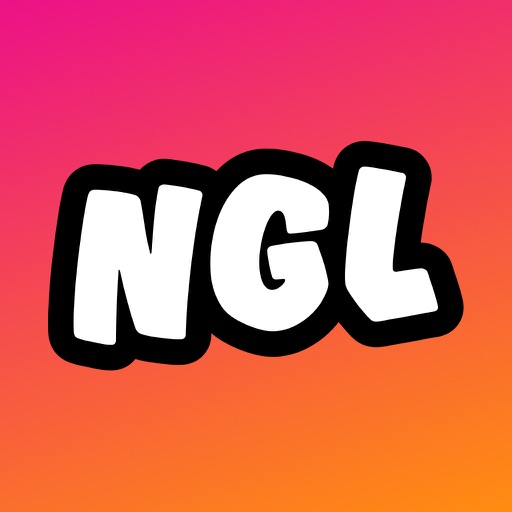
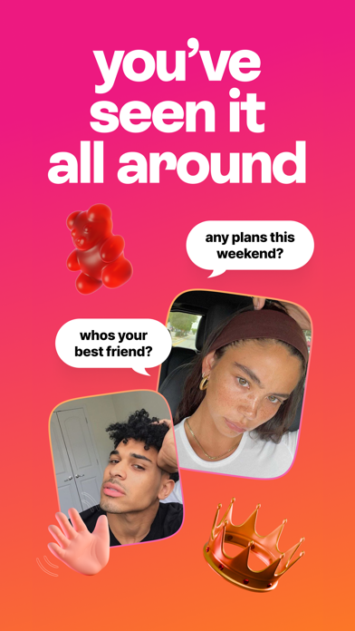

我算了一笔时间账：NGL 这个匿名提问箱，你到底配不配用
NGL 本身免费，但免费不等于零成本。轻度挂一下 bio、主力每周发快拍、重度多平台铺——三档使用强度，三笔不同的时间账。
先说结论：这玩意儿本身免费，但免费不等于零成本
我纠结了好几天要不要开个 NGL 链接。纠结的点不是花钱——它的核心功能全免费：注册、生成个人链接、收件箱、关键词过滤、游戏卡玩法，这些打开应用就能用，连广告都不激进。真正让我犹豫的是另一笔成本：时间。
免费产品的陷阱就在这里。你以为自己零门槛进来了，结果发现想要真的收到有意思的问题、而不是三条"在吗"和一堆骚扰消息，需要持续往里投精力。就像开了个免费公众号，平台不收你钱，但你内容发得勤不勤、回复认不认真，直接决定了这个号是活的还是死的。

它到底给了你什么（免费版就这些，没别的）
NGL 的定位很明确，去它的官网一眼就能看明白：给你一条专属匿名提问链接，任何人点开就能不留名地给你发消息。安装包从NGL下载拿，注册完就自动生成，格式是"域名加你的社交用户名"，链接即身份——看到的人一眼就知道这是谁的提问箱。核心功能列出来其实就这几项：
- 个人链接：永久绑定首次登录的用户名，不可改名，卸载重装会生成带数字后缀的新链接，相当于丢了门牌
- 收件箱：消息按时间排序，支持举报和关键词过滤，被举报的设备会被平台标记
- 游戏卡：内置了 Never Have I Ever、三个词这类派对游戏模板，点一张就能发出去，比干巴巴说"来问我"有效得多
- 公开回复：可以把有意思的问题和你的回答贴回快拍，制造互动循环
没有 Pro 版，没有订阅墙，没有"升级解锁"。我翻了一圈文档，确实没看到任何付费功能的描述。这本身是件好事——你不用纠结"升级值不值"，但也意味着你遇到的任何问题（骚扰太多、消息冷场），都得靠自己调整策略解决，花钱买不到捷径。
三档使用强度，三笔不同的时间账
下面分三类人算一算，每类都是我实际见过的朋友在用 NGL 的方式。
轻度用：链接挂 bio，偶尔想起来才管
这类人的典型操作就是注册完挂到 Instagram bio 里，然后该干嘛干嘛。一个月想起来打开看一次收件箱，有回就随便回两句，没回就算了。
时间账：注册 + 挂 bio 五分钟，每月维护大概十分钟。总成本可以忽略。
回报：大概率收到 0~5 条消息，大部分是"在吗""你好"这类没营养的。偶尔能碰到一条有意思的，但概率不高。
结论：赚的。五分钟挂个链接，哪怕一年只收到一条让你会心一笑的匿名提问，这五分钟也值了。你什么都不亏——它就在 bio 里挂着，不来消息你也没损失。
主力用：每周发快拍，认真经营互动
这类人是把 NGL 当粉丝互动工具在用：每周至少发两三次快拍，把链接贴在快拍贴纸里，收到有意思的问题就回，还会把问答贴回去告诉大家"这个箱子是活的"。文档里明确提过——公开回复是冷启动的核心，没人想当第一个提问的人，你先动起来才会有人跟进。

时间账：每周发快拍 + 选回复 + 贴回去，大概 15~30 分钟。一个月下来 2~3 小时。
回报：正常运营的话，每周能稳定收到 10~20 条消息，质量也会上来——因为你在筛选，公开回复本身就是在告诉提问者"什么样的问题会被看见"。粉丝粘性有明显提升，偶尔能收到那种"一直想问但不好意思当面说"的真心话。
风险：骚扰消息的概率也会上升——曝光多了，什么人都能进来。NGL文档里给了四个保护工具（暂停链接、举报封设备、关键词过滤、删了重建），这套组合拳需要你花点时间调一调。关键词过滤宁松勿紧，调太严会误伤正常消息，让你误以为"没人提问"。
结论：看情况。如果你有稳定的社交内容输出（快拍本来就在发），那把 NGL 贴上去是顺带的事，边际成本几乎为零。如果你本来没在发快拍，为了 NGL 特地去做内容，那 2~3 小时换 10 条消息，性价比就要打个问号了。
重度用：多平台同步铺，想做私域流量
这类人是真的想把 NGL 做成一个私域入口——Instagram、TikTok、Snapchat 三边都挂，bio 常驻 + 快拍轮发 + 游戏卡换着玩，甚至会配合买一些社交平台的推广流量。
时间账：每周多平台同步 + 内容策划 + 回复管理，大概 5~10 小时。
回报：如果你真的有内容和流量基础，NGL 可以成为一个不错的粉丝声音收集器。你能从匿名提问里看到粉丝真实在想什么、关心什么，这比看点赞数有用多了。但请注意——NGL 本身不帮你获客，它只负责接住已经过来的人。没有流量基础的人重度运营，大概率就是自嗨。
风险：骚扰消息的量级会让你烦躁。文档里提到有人长期被纠缠，最后只能删链接重建——重建的代价是老朋友要重新认识新链接，之前积累的互动基础清零。
结论：慎重。除非你已经有一定规模的社交粉丝，否则重度运营 NGL 基本是浪费时间。它不是一个帮你涨粉的工具，是一个帮你维护现有粉丝关系的工具。
不付这笔"时间账"，有什么别的路
如果你看完上面的算账觉得 NGL 投入产出比不值，还有几个替代选项：
- Slido：更偏向活动场景的提问工具，实时投票、匿名提问都有，适合直播、线下活动用。缺点是功能重了，日常维护成本更高，而且免费版有人数上限
- 自建表单：用 Google Forms 或者 Typeform 做一个匿名问卷，贴链接出去。完全免费，完全可控，但互动感差很多——它是静态表单，不是收件箱，没人会像给 NGL 那样持续给你发消息
- 直接用现有评论区/私信：最省事的方案。但问题也很明显——不是匿名的，粉丝想问点真心话就不敢了。NGL 的核心价值恰恰就是这个"匿名"卸掉的社交压力
还有一个选项：干脆不做。如果你没有那种"想听到粉丝真实想法"的刚需，那 NGL 对你来说就是个可有可无的玩具——不玩也没什么损失。
我的账本结论
算到最后，NGL 的账其实是这样的：
- 闭眼挂着的人（轻度用）：赚。五分钟换一个长期有效的匿名入口，成本可忽略
- 有内容基础想认真经营的人（主力用）：值得投时间。把它当成社交运营的一个环节，而不是单独一件事，边际成本低
- 想靠它涨粉引流的人（重度用）：别做。它做不到这个，你花的时间会打水漂
NGL 本质上是个工具——好工具不负责给你创造价值，只负责让你把已经在做的事做得更顺手。
如果你看完这篇还在犹豫，给你一个最简单的测试：花五分钟注册一下，链接挂 bio 里放两周。如果两周内收到超过五条让你觉得"有意思"的消息，那就值得继续投时间；如果只有骚扰或沉默，那你删掉链接也没什么损失。
这套 NGL 的资料同步维护在GitHub、Gitee、GitCode——GitHub 是主仓存文档原稿，Gitee 和 GitCode 方便国内同步访问和备份。